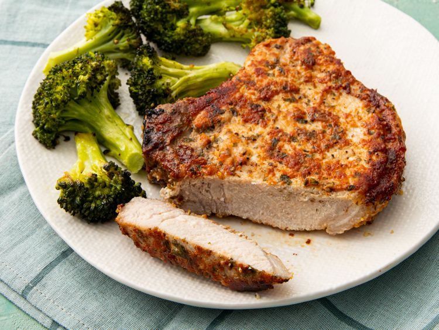

Easy Air Fryer Pork Chops

Description
Boneless pork chops cooked to perfection in the air fryer. This recipe is so easy and you couldn't ask for a more tender and juicy chop.
Use your trusty air fryer to make the best (and easiest) pork chops of your life.
Ingredients
These are the ingredients you'll need to make this easy pork chops recipe:
- ½ cup grated Parmesan cheese
- 1 teaspoon paprika
- 1 teaspoon garlic powder
- 1 teaspoon kosher salt
- 1 teaspoon dried parsley
- ½ teaspoon ground black pepper
- 4 (5 ounce) boneless pork chops
- 2 tablespoons extra virgin olive oil
Steps
Follow these simple steps and you'll have a delicious meal:
- Preheat the air fryer to 380 degrees F (190 degrees C)
- Combine Parmesan cheese, paprika, garlic powder, salt, parsley, and pepper in a flat shallow dish; mix well
- Coat each pork chop with olive oil. Dredge both sides of each chop in the Parmesan mixture and set on a plate
- Place 2 chops in the basket of the air fryer and cook for 10 minutes. Then transfer to a cutting board and let rest for 5 minutes.
- Serve hot and enjoy!